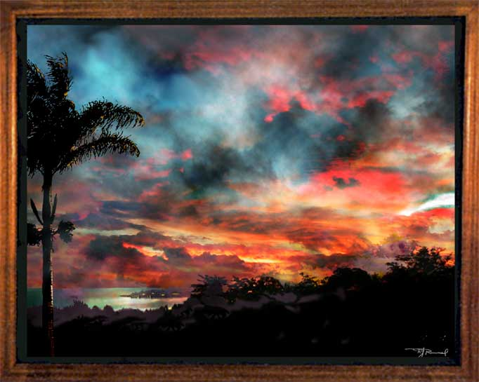

| Kaneohe Dawn. Paintage, airbrush, watercolor. This dawn is a painted montage of several photos of sunrise over Kaneohe, Hawaii. Sometimes when I'm working at my computer in the morning I'll look up and see a glorious dawn. But the best colors only last for a minute or so, and by the time I get my camera, some of the brilliance in reds and yellows has faded. But then I can bring them back on the computer using Photoshop and Painter, and add wispy clouds and dark blue as a complement. In the lower left of the paintage is Kaneohe Bay, and on the other side is Kaneohe Marine Corp Base. |